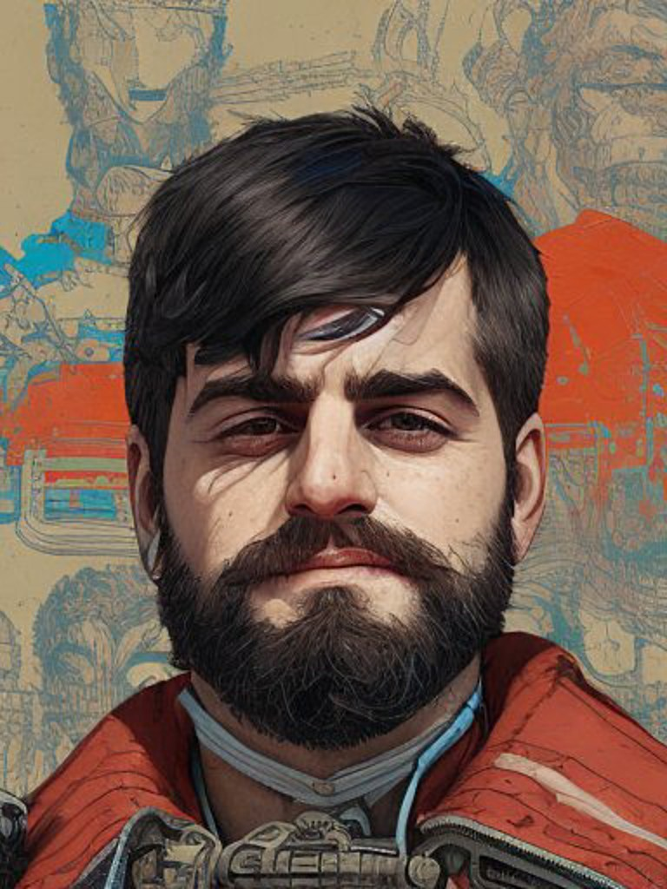

Precisa de uma ajuda com a matéria? Aqui você encontra o professor que você estava procurando
Olá, sou Teotonio José de Souza Jr, professor de Ciências da Natureza - Biologia, Física e Química. Também trabalho com as disciplinas de Programação e Pensamento Computacional para o Ensino Fundamental II e Ensino médio. No mais, sou habilitado para reforço de matemática nos anos iniciais; Tenho duas pós-graduações em Ensino e sou formado pela Universidade Federal da Integração Latino Américana (UNILA).
Instagram Github 